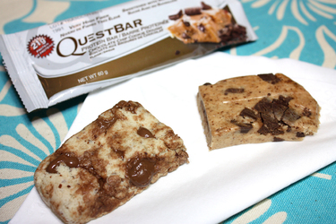

Quest Protein Bars

- 2 tbsp fiber syrup
- 2 tsp almond our oats flour
- 1 scoop protein
- Chia seeds, hemp seeds, flax seeds, berries
Add syrup to skillet. Hit up until you see bubbles. add flour and protein powder and mix. Move to zip lock bag and add some fun seeds and maybe berries. Mix well until it’s solid and shape into whatever you want.